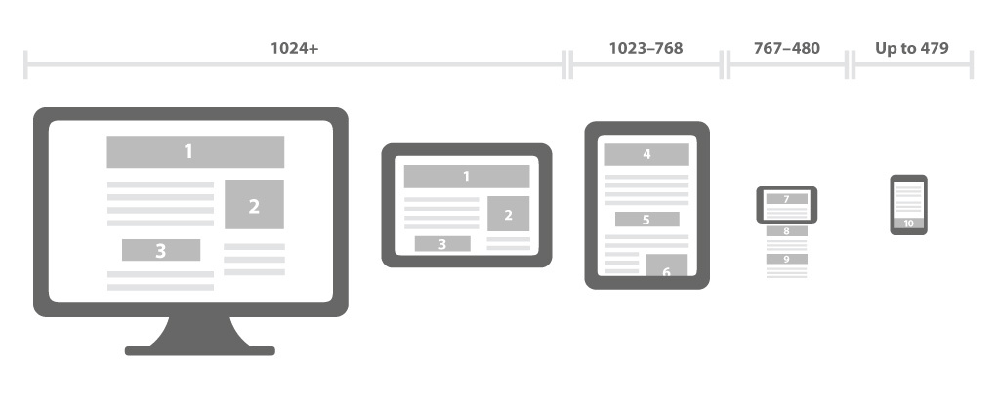

RWD + M
Responsive Web Design and Mobile
Created by Czare Riello
Responsive Web Design
Responsive Web Design é um conceito. Apresentar a informação de forma acessível e confortável para diversos dispositivos. Muitos sites restringem o conceito a telas de diferentes tamanhos, mas o conceito é muito mais abrangente.
Media Queries: Type
all – todos os dispositivosaural – sintetizadores de vozbraille – leitores de Brailleembossed – impressoras de Braillehandheld – celulares com telas pequenasprint – impressoras convencionaisprojection – apresentações de slidesscreen – monitores coloridastty – teleimpressores e terminaistv – televisores
Media Queries: features
Dimensões
width (max-width: 799px)
height (max-height: 799px)
device-width (max-device-width: 799px)
device-height (max-device-height: 799px)
aspect-ratio (min-aspect-ratio: 1/1)
device-aspect-ratio (device-aspect-ratio: 16/9)
orientation (orientation: portrait)
resolution (min-resolution: 192dpi) (min-resolution: 2dppx)
device-pixel-ratio (min-device-pixel-ratio: 2)
Media Queries: features
Cor
color (min-color: 4)
color-index (min-color-index: 256)
monochrome (monochrome)
Considerações para o celular
A tela é pequena
O dedo não é um mouse
Nosso 3G não é banda larga
O input de dados é difícil
Meta tag Viewport
Não bloqueie o Zoom.
Mais considerações
Não use :hover
Use Botões grandes (A Apple recomenda um tamanho minimo de 44px)
Hot Zones
E ainda mais considerações
evitar display: none
evitar position: fixed
não usar Lightbox
não usar Flash, Java ou Silverlight
Melhorando os inputs no celular
Labels no topo ou dentro
Opção mostrar password
Usar Apis (geolocation, getUserMedia etc)
Menos campos, óbvio
Forms de html5
Fast Buttons
No celular o navegador espera uns 300ms antes de disparar o clique
$('a').tap(function(event){
location.href = this.href;
event.preventDefault();
});
SEO
Na Dafiti ainda vamos ter 2 versões
Breakpoints
320 pixels - Smartphones retrato.480 pixels - Smartphones paisagem.600 pixels - Tablets pequenos. Ex: Amazon Kindle (600×800)768 pixels - Tablets maiores retrato. Ex: iPad (768×1024)1024 pixels - Tablets maiores paisagem, monitores antigos.1200 pixels - Monitores wide.
